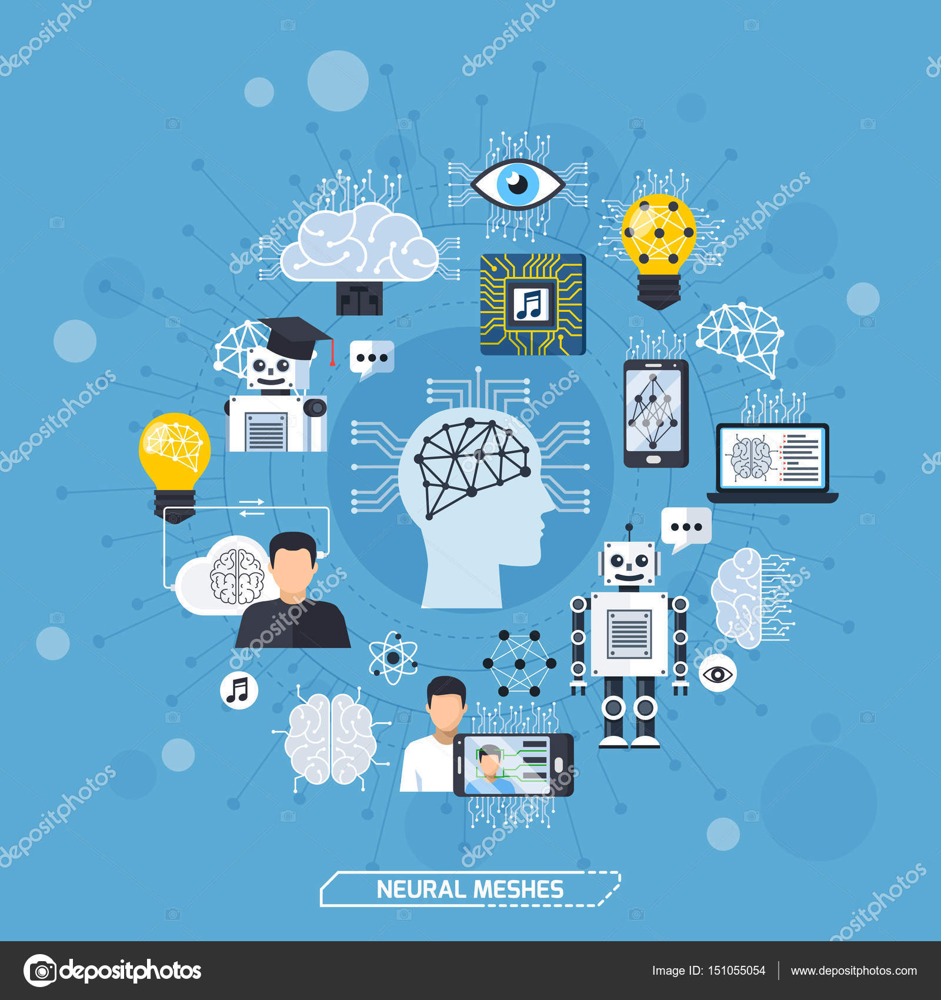

Conectivismo
Rodríguez, A. J. R., & de Martins, D. M. M. (2009). Conectivismo como gestión del conocimiento. REDHECS: Revista electrónica de Humanidades, Educación y Comunicación Social, 4(6), 73-85.
“El Conectivismo define el aprendizaje como un proceso continuo que ocurre en diferentes escenarios, incluyendo comunidades de práctica, redes personales y en el desempeño de tareas en el lugar de trabajo”. (Gutiérrez, L. 2012).
Gutiérrez, L. (2012). Conectivismo como teoría de aprendizaje: conceptos, ideas y posibles limitaciones. Revista educación y tecnología, (1), 111-122.
“George Siemens, definió los siguientes principios del conectivismo:
- Aprendizaje y conocimiento se encuentran en la diversidad de opiniones.
- Aprendizaje es un proceso de conexión especializada de nodos o fuentes de información.
- Aprendizaje puede residir en artefactos no humanos.
- La capacidad para conocer más, es más importante que lo actualmente conocido.
- Alimentar y mantener las conexiones es necesario para facilitar el aprendizaje continuo.
- La habilidad para identificar conexiones entre áreas, ideas y conceptos, es esencial.
- La toma de decisiones es un proceso de aprendizaje en sí mismo.
Seleccionar qué aprender y el significado de la información entrante, es visto a través de los lentes de una realidad cambiante”. (Siemens, G., 2004).
Siemens, G. (2004). Conectivismo: Una teoría de aprendizaje para la era digital.
En conclusión, el conectivismo es una teoría de aprendizaje que trata de abordar las nuevas formas de adquisición y emisión de conocimiento, en una sociedad que abarca la era digital. En la actualidad, la accesibilidad a la red y a los contenidos digitales, las herramientas tecnológicas y todo el entorno virtual, ha marcado en la sociedad la necesidad de implementar nuevas estrategias que permitan incorporar la tecnología en los diferentes entornos de aprendizaje y ámbitos de la educación.
En ese sentido, el docente debe apropiarse de los procesos de enseñanza y aprendizaje potenciados desde la aplicabilidad y uso de las tecnologías de la información y la comunicación, TIC, herramientas que le permitirán al docente desarrollar nuevas formas de aprendizaje y fortalecer en el educando sus habilidades cognitivas para enfrentar y dar solución a problemas de su entorno.
